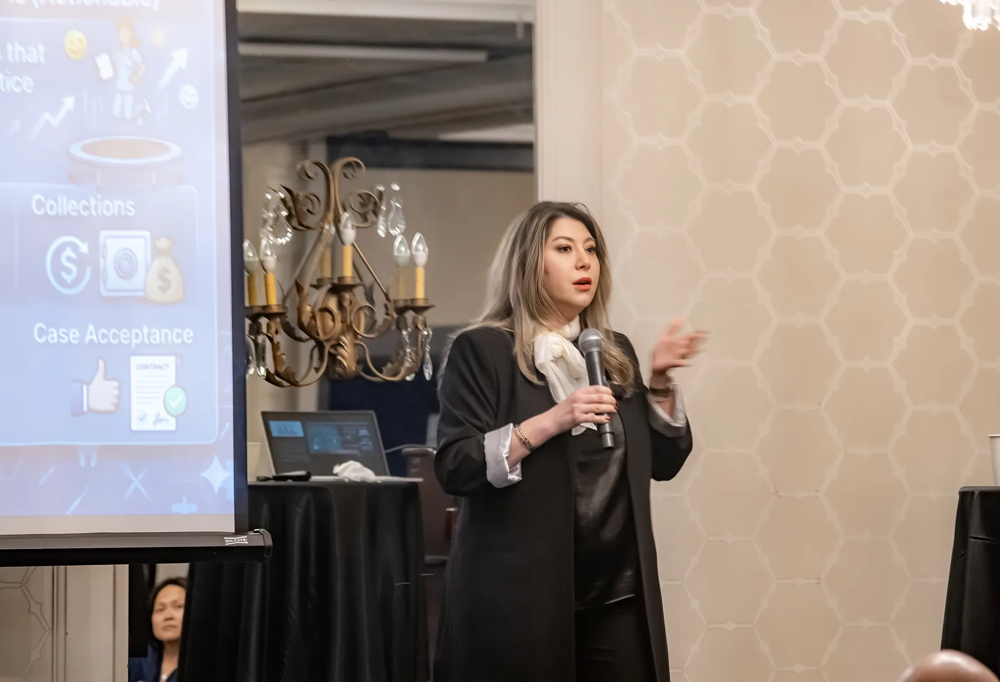

Leadership development, culture strategy, and operational coaching for dental practices ready to grow with more clarity, stronger teams, and healthier performance.
At Phoenix Leadership, I help dental practice owners and office managers build the leadership structure behind a thriving practice.
Because long-term success does not come from clinical excellence alone. It comes from strong leadership, clear communication, aligned teams, operational discipline, and the ability to turn vision into daily execution.
Building clarity, intention, and structure in how leaders lead.
Developing the operational leader your practice depends on.
Creating clear standards for how teams communicate and follow through.
Aligning people around shared goals, roles, and expectations.
Building the operational rhythm that supports consistent performance.
Turning meetings into momentum and decisions into action.
Optimizing how time and resources support production and growth.
Guiding practices through expansion with the right leadership structure in place.

Many dentists were never formally trained to lead teams, develop office managers, or build the systems that support healthy growth.
That gap often shows up as repeated issues, unclear accountability, operational drag, and too much still falling back on the doctor.
Leadership development helps change that.
Repeated operational issues with no root-cause resolution
Office managers promoted without proper leadership development
Accountability gaps that slow production and frustrate growth
Everything flowing back to the doctor instead of the team
"Culture is not accidental. Accountability is not accidental. Growth is not accidental."
They are built through leadership, clarity, and systems that support the team every day.
Strong practices are built through leadership that is clear, thoughtful, and proactive — not reactive.
Excellence reflected in how teams communicate, lead, follow through, and care for patients and one another.
Clarity creates confidence, accountability, efficiency, and stronger decision-making throughout the practice.
Healthy growth built on honest communication, aligned systems, strong leadership, and long-term sustainability.
Practices grow stronger when owners and office managers are developed intentionally and supported well.
Real change happens when strategy becomes daily action through structure, repetition, and follow-through.
If you are ready to strengthen your office manager, improve communication, and create better systems for growth, I would be happy to connect.